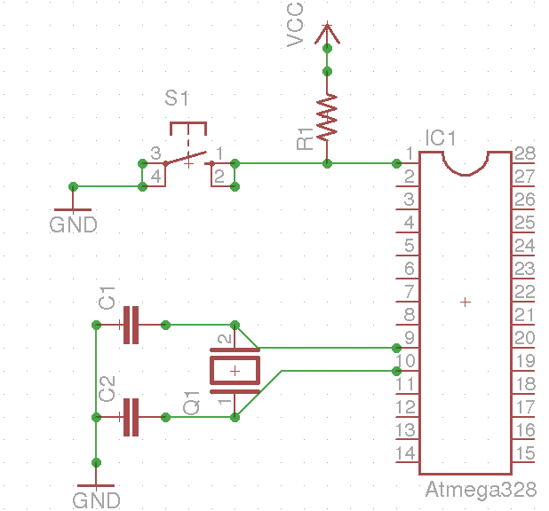

Aws on BBB + Battery
Bare Bone Board with battery as power source.
Bare Bone Board
for arduino platform and inspired from arduino playgroun and arduino tutorial.
Verified from here.
Components required for making Bare bone Board
-
MCU : Atmega328 | datasheet.
-
Crystal : 16 MHz.
-
Caps : 22pF x 2.
-
VCC pin connected to 7, 20 and 21.
-
GND pin connected to 8, 22.
-
VCC to power MCU and another VCC to power Analog to Digital login in MCU and other VCC for Analog referrence.
-
pin number 9 and 10 goes to Crystal of 16 MHz.
-
pin number 1 us pulled up with resistor of ~10k.
-
pin number 1 is also connected to a toggle switch whoes other leg is grounded.(Recommended in datasheet of MCU Atmega328/168 under reset circuit section).
-
22pF capacitor connected to crystall legs and grounded.
-
For images please take a look from this link.
-
Voltage regulators are required to give good quality 5VDC to MCU.
-
with that 100uF capacitor and one ceramic capacitor to filter current. + Issue with doing bare bone board is MCU is now exposed to power supply so we have to take care of the power regulation. + Other things is if we have a ready made source of DC power then we can kick out the voltage regualtor ffrom our board.
-
This completes the arduino as a standalone board without any other components.
-
And on getting power to MCU, cpu will start executing the loaded code.
Uploading code to bare bone board
Option are there to do this
-
One way is shown in this web page
-
Other way is shown here.
-
Another sketch loader is available here.
-
Thing here is we have to upload the sketch to our MCU so installed on our BBB. So to upload program we just need RxT and TxT pins along with that RST pin . So either we can use a sketch loader to load program onto MCU, or we can make a arduino as sketch loader and upload our program on to MCU in our BBB. This is shown here. Another thing is usually we get atmega328 IC from market with pre-burnt bootloader so please do not mess with bootloader, just skip the step of burning bootloader for now.
AWS on bare bone board with battery as support
Components along with connection powered by battery.
-
Components which requires power source in aws project apart from mcu. + Sensors + DHT22 + BMP085 + GSM
Running AWS on BBB
Circuit
+ MCU with hardware reset circuit. 
Source : This Link and This Link
+ Current consumption (Doing Nothing) at 16MHz at 5 v : 16.43 mA. + Power consumption 16 MHz at 5V is running blinking LED but without connecting LED is 81.8 mW. + Current consumption (Doing Nothing) at 16 Mhz at 3.3v: 6.6 mA. + Operating Voltage max. : 6 V. + Low Operating Voltage at 1 MHz : 1.8 V + Power in mW at 16 MHz is 21.8. + LCD Interfacing + Source for 20x4 datasheet + Operating Voltage typical: 5V. + Current Idd at 5 v is typical: 2 mA. + DHT22 interfacinig and its consumptions, datasheet + Typical Supply voltage: 5V. + Typical Current Supply: 1.5 mA. + BMP085 interfacing and current consumption, datasheet + Typical Voltage Supply: 2.5 V + Max Voltage Supply: 3.6 V + Typical Current Supply at standard mode: 5uA. + GSM interfacing and current consumption Starter Guide + Voltage: 7–15V AC or DC (board has onboard rectifier). + Normal operation Current draw: 0.25 A. + Transmission time current draw: 1 A. + apart from devices so interfaced, we have loads of smd and through hole LEDs and voltage regulators on GSM breakout board and also on BBB board of ours which will also contribute in drawing current from the power source, .i.e. battery. + So adding up current values of sensors, LCD, GSM and MCU its comes up to 19.93mA + 5uA + 0.25 A and this comes out as ~0.27 A. + Current consumption of LEDs and voltage regulators are also noticable.
Battery
-
One beast, .i.e GSM here which takes hell lot of current from power source.
-
Lets take one by one battery and analyze which suits best to AWS on BBB with GSM . + AA+ Ni-MH + Taking 2000mAh as avg current capacity and 1.2v per cell. + AA+ 1.2v x 8 ~ 9.6 v of 2000mAh. + This much of voltage is required for powering GSM and this battery have the discharge rate to power up the GSM. + But one problems come before us is GSM module can take that much of voltage without any problem but our BBB board cannot tolerate that much of voltage so we have to plugin a Low drop out voltage regulator whose current consumption is in ~10 mA datasheetand then we can connect to MCU. + So we cannot bypass even low drop out voltage regulators, but we must use LDO, or say low drop out voltage regulators so less current will be consumed. + considering 0.27 A is consumed and we have 2000mAh then on battery the AWS will live for not more than 8Hrs (max). + Lithium and Lipo battery + They are very sensitivie and have 3.7 v with 1800 mAh in average. + This battery alone cannot power GSM module. + Avoid keeping LIP and Lithium battery in series or in parallel. + Alkaline battery + The figures are same as AA+ Ni-MH battery, but difference is these battery are not rechargable in common. + Lead acid battery, reffered from here + They are + 12 V with 4.5, 6, 8, 9, 12 A of current capacity. + Current draw from the battery will be the quotient of voltage and load. + This battery got a load of current capacity. + We have to put a LDO voltage regulator in this case to drop down to 5 v adn 3.3 v to power up MCU and BMP085. + 12 v will be powered to GSM module. + Considering 12 v 12 AH. + Normal current cunsumption was ~ 0.27A. + With this, our AWS on Lead acid battery last for 44.4 Hrs. + Point to optimize + Seek for sleep mode where ever required. + Sleep MCU. + Power Down GSM. + Make your own GSM Break out module hence only one voltage regulator will be used. + Use SMD components on BBB which have low power consumption. + Keep sim deregistred as much as possible. + LED are sucker of current, eliminate those LED wherever possible.
Fabrication details
putting AWS on good material
-
Options are + Put this on Zero Board + Pros + Quick in making by hands. + Can re-wire. + Place components as you desire. + Can alter connections in future. + Other components can be added in future. + Customizable. + Cons + Wires may mess up things. + Internal resistance of baord may not let a good quality voltage and current to flow in circuit. + Soldering point many time lose there contacts. + This is for temporary useage. + Not fit for production environment. + Due to flexibility of Zero Boards, joint may easily break off. + Putting this on PCB + Pros + Good conduction on board. + Board will have long life. + Components stands sturdy and with good hold on board. + Good quality soldering can be done on that. + Can tolerate temperature and force. + Cons + Cannot be re-wired. + Onces done connot be changed. + Some components may get wasted but other components can be recovered. + PCB will be wasted of circuit not works as per desire.
Your comments are valuable, mail me at Annim Banerjee